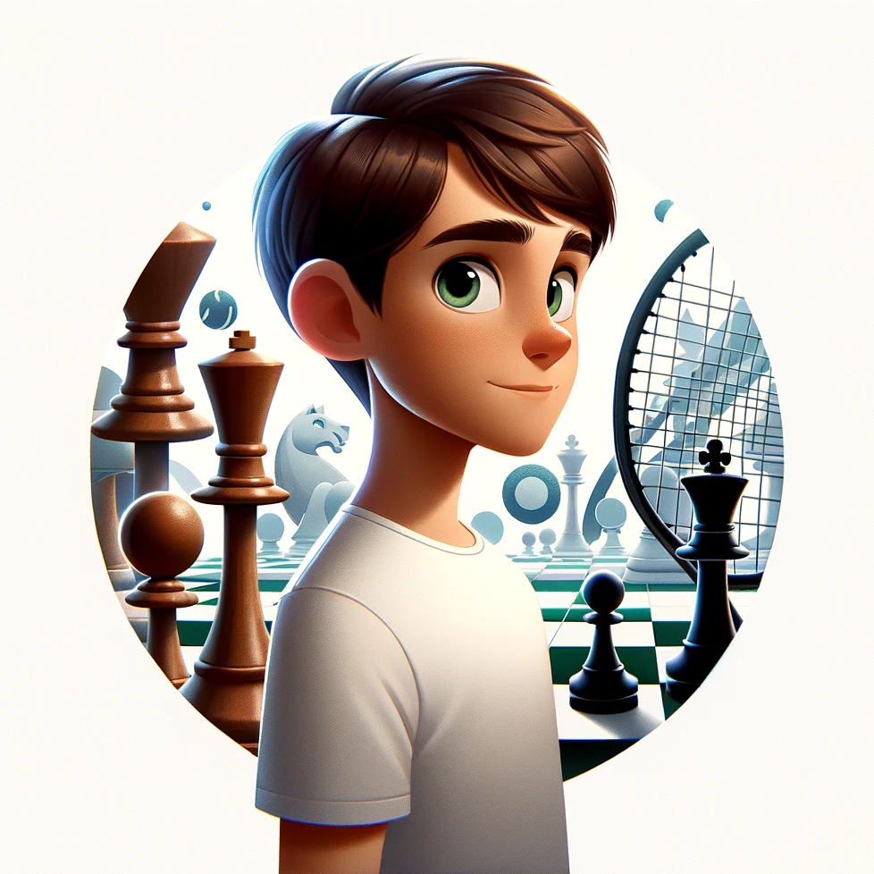

Mathis BOCHE
Passionné d'Échecs, Tennis et IA
Passionné d'Échecs, Tennis et IA
Je suis né le 17 août 2007 à Fécamp.
Début du tennis à l'âge de 4 ans, début d'une passion pour le sport.
Classement 15/4 en tennis et entraînement avec la ligue de Normandie. Découverte des échecs et premier tournoi.
Arrivée sur Paris, continuation du tennis et adhésion à un club d'échecs en Île-de-France.
Pratique des échecs à distance durant le confinement. Anecdote personnelle : un jeune renardeau sauvage devenait un visiteur fréquent dans notre jardin en Normandie.
Participation aux championnats de France jeunes U14 en échecs.
Participation au championnat de France jeunes U16 en échecs. Découverte de l'intelligence artificielle.
Poursuite de l'intérêt pour l'intelligence artificielle avec la sortie de GPT-4.
16 ans, passionné par l'IA, les échecs et le tennis.